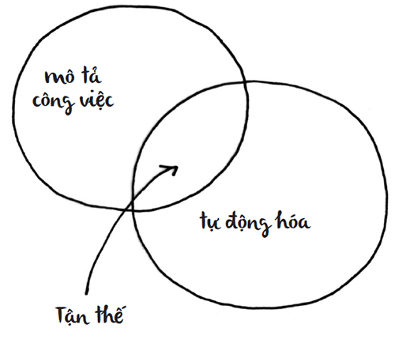
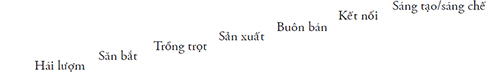

Chúng ta bị bủa vây bởi bè lũ quan liêu, những kẻ hay ghi chú, chỉ biết đến nghĩa đen, luôn dò cẩm nang, dân lao động chỉ chờ đến thứ Sáu, răm rắp theo bản đồ và đám nhân viên đáng sợ.
Vấn đề là bè lũ quan liêu, những kẻ hay ghi chú, chỉ biết đến nghĩa đen, luôn dò cẩm nang, dân lao động chỉ chờ đến thứ Sáu, răm rắp theo bản đồ và đám nhân viên đáng sợ nói trên đang phải chịu khổ. Họ đau khổ vì bị phớt lờ, trả lương thấp, cắt giảm biên chế và chịu áp lực.
Trong chương đầu tiên của cuốn Wealth of Nations (tạm dịch: Sự thịnh vượng của các quốc gia), Adam Smith đã làm rõ rằng phương thức giành thắng lợi của doanh nghiệp là phân nhỏ hoạt động sản xuất hàng hóa thành những tác vụ nhỏ, có thể được đảm đương bởi những nhân công lương thấp luôn tuân theo chỉ thị đơn giản. Smith cho thấy một nhà máy sản xuất đinh ghim hoạt động hiệu quả thế nào khi so sánh với những thợ thủ công làm đinh ghim bằng tay. Sao phải thuê một thợ làm đinh siêu hạng khi chỉ cần 10 công nhân nhà máy sản xuất đinh ghim – được đào tạo vừa đủ – có thể sử dụng máy móc và làm việc cùng nhau để tạo ra cả nghìn chiếc đinh ghim, với tốc độ nhanh hơn nhiều so với một thợ lành nghề làm một mình?
Trong gần 300 năm qua, đó là cách công việc được vận hành. Điều ông chủ nhà máy muốn là “những bánh răng” biết phục tùng, nhận lương thấp và dễ thay thế để vận hành những cỗ máy hiệu quả của họ. Các nhà máy tạo nên năng suất, và năng suất lại tạo ra lợi nhuận. Sau cùng, điều đó mới vui làm sao (đối với chủ nhà máy).
Xã hội của chúng ta đang vấp phải khó khăn vì trong thời điểm thay đổi, bạn chẳng cần cho đội ngũ của mình lũ quan liêu, những kẻ chỉ biết cắm đầu ghi chú, luôn dò cẩm nang, dân lao động chỉ chờ đến thứ Sáu, răm rắp tuân theo bản đồ và đám nhân viên đáng sợ. Đám đông phục tùng chẳng giúp được gì nhiều khi bạn không biết phải làm gì tiếp theo.
Điều chúng ta muốn, cần và phải có là những con người “không thể thiếu”. Chúng ta cần những nhà tư tưởng, kẻ khiêu khích và người biết quan tâm đích thực. Chúng ta cần những nhân viên marketing có thể dẫn dắt, nhân viên bán hàng dám mạo hiểm để tạo ra mối liên kết nhân bản, và những người tạo ra sự thay đổi sẵn sàng chịu bị xa lánh nếu họ cần nêu ra quan điểm. Mỗi tổ chức đều cần một nòng cốt, một người có thể gắn kết các thành tố lại với nhau và tạo ra sự khác biệt. Một số tổ chức vẫn chưa nhận ra, hoặc chưa suy ra được điều đó; nhưng chúng ta đều cần những nghệ sĩ.
Nghệ sĩ là những người có biệt tài tìm ra đáp án mới, mối liên hệ mới hay cách mới để hoàn thành mọi việc.
Và bạn sẽ là người đó.
Bạn đã ở đâu khi thế giới đổi thay?
Tôi lớn lên trong một thế giới nơi mọi người làm những gì họ được yêu cầu, tuân theo chỉ thị, tìm một công việc và kiếm sống – chỉ thế thôi.
Giờ đây, chúng ta đang sống trong một thế giới nơi toàn bộ niềm vui và thu nhập đều bị vắt kiệt do chúng ta cứ mãi tuân theo luật lệ. Xu hướng thuê ngoài, tự động hóa và phương thức marketing mới đang trừng phạt bất kỳ ai chỉ giỏi vừa đủ, biết nghe lời và đáng tin cậy. Bất kể bạn là nhiếp ảnh gia tiệc cưới hay nhân viên môi giới bảo hiểm, sẽ không còn con đường rõ ràng nào để dẫn một người đến sự hài lòng khi làm việc.
Nhà máy – một hệ thống nơi lao động có tổ chức gặp gỡ nguồn vốn nhẫn nại, các thiết bị cải thiện năng suất và đòn bẩy – đã tan rã. Ohio và Michigan đã mất đi các nhà máy “thực sự” của họ, cũng như các nhà máy của nhiều ngành công nghiệp dịch vụ đã sụp đổ. Tệ hơn, loại hình công việc ít rủi ro và ổn định cao chiếm ba phần tư trong số chúng ta đã biến thành những cạm bẫy không lối thoát, với đầy sự bất mãn và rủi ro bất công.
Cốt lõi của vấn đề này chính là: Tầng lớp trung lưu đi làm hiện đang đau khổ. Lương bổng trì trệ, và sự an toàn trong công việc chỉ còn là ký ức phai nhạt đối với nhiều người; chỉ có áp lực vẫn không ngừng gia tăng. Chúng ta lâm vào ngõ cụt, và có vẻ cũng không còn chỗ trốn.
Gốc rễ của nỗi đau này chính là do mong muốn của các tổ chức nhằm biến nhân viên thành những bánh răng dễ thay thế trong cỗ máy khổng lồ. Người nào càng dễ bị thay thế, người đó càng nhận được ít lương. Và cho đến nay, người lao động đều liên quan đến sự thông dụng hóa này.
Đây là cơ hội của bạn. Một nhân viên “không thể thiếu” sẽ mang đến tính nhân văn, mối liên kết và tài năng cho tổ chức của cô ấy. Cô ấy sẽ là đấu thủ chính, là người mà doanh nghiệp không thể để mất, và là người mà bạn có thể dựng xây điều gì đó xung quanh cô ấy.
Bạn không chấp nhận ca thán về nền kinh tế và buộc bản thân thừa nhận rằng công việc kiểu nhà máy đã chết. Thay vì thế, bạn nhận ra cơ hội để trở thành người “không thể thiếu”, được săn đón ráo riết và độc nhất vô nhị. Nếu “Con bò tía” là sản phẩm đáng được bàn tán, thì nhân viên không thể thiếu – tôi xin gọi là “Nhân sự cốt cán” – chính là người xứng đáng được tìm kiếm và giữ chân.
Cảm ơn vì đã bảo vệ chúng tôi khỏi nỗi sợ của chính mình
Làm sao người ta có thể tẩy não hàng tỷ người để khiến họ chôn vùi tài năng, từ bỏ ước mơ và tin vào ý tưởng trở thành một nhân viên bình thường trong nhà máy, nhất nhất tuân theo chỉ thị?
Một phần nguyên nhân là yếu tố kinh tế – điều này không phải bàn cãi. Công việc ở nhà máy đem đến cho những con người bình thường, với ước mơ nhỏ, một cơ hội để tạo ra sự thay đổi đáng kể trong chuẩn mực sống của họ. Và thứ của cải mới này sẽ đi cùng với phúc lợi, sự an toàn nghề nghiệp hay bảo hiểm sức khỏe – như một phần thưởng.
Nhưng tôi không tin như thế là đủ để giải thích cho sự đón nhận rộng rãi một lối sống mới. Mảnh ghép chính của đòn bẩy chính là lời hứa sau: Cứ tuân theo chỉ thị, anh sẽ không cần suy nghĩ nữa. Cứ làm việc của mình rồi bạn sẽ không phải chịu trách nhiệm về các quyết định. Trên hết, bạn sẽ không phải đem tài năng của mình đến chỗ làm.
Trong mỗi doanh nghiệp tại mọi quốc gia trên thế giới, mọi người đang chờ được bảo xem họ phải làm gì. Tất nhiên, nhiều người cứ giả vờ rằng mình muốn nắm quyền kiểm soát, có quyền hạn và đưa tính nhân văn vào công việc. Nhưng ngay khi có một nửa cơ hội, họ lại từ bỏ nó trong tích tắc.
Giống như những thường dân nhút nhát sẵn sàng làm bất cứ điều gì gã bạo chúa sai bảo, chúng ta cũng từ bỏ tự do và trách nhiệm của mình để đổi lấy sự chắc chắn đến từ việc được kẻ khác bảo ban.
Tôi đã chứng kiến điều này ở trường trung học, tại Akron, Bangalore, London và các công ty khởi nghiệp. Mọi người muốn được bảo phải làm gì vì họ sợ (đến chết điếng) nếu phải tự mình nảy ra ý tưởng.
Thế là chúng ta chấp nhận thỏa thuận. Chúng ta đồng ý nhận một công việc để đổi lại một bộ chỉ dẫn. Và do điều này đã đem lại chuẩn mực sống cao hơn suốt cả trăm năm, nên có vẻ như đó là một thỏa thuận tốt.
PERL (Percentage of Easily Replaced Laborers – Tỷ lệ lao động dễ bị thay thế)
Trong kỷ nguyên của nhà máy, mục tiêu đặt ra là đạt chỉ số PERL cao nhất. Hãy nghĩ về điều này. Nếu các nhân công của bạn càng dễ bị thay thế, bạn càng có thể trả lương cho họ ít hơn. Càng phải ít trả lương cho họ, bạn sẽ càng kiếm được nhiều tiền. Ví dụ, một tòa soạn thành thị có khoảng 400 nhân viên, nhưng chỉ có vài chục nhân viên bán hàng và người phụ trách chuyên mục là khó thay thế ngay lập tức. Mục tiêu của họ là đẩy mạnh và bảo vệ hệ thống, chứ không phải con người.
Thế nên, chúng ta đã xây dựng những tổ chức khổng lồ (các đảng phái chính trị, tổ chức phi lợi nhuận, trường học, tập đoàn) với vô số lao động dễ thay thế. Các công đoàn đã chống lại điều này một cách đúng đắn, vì họ xem hành động hợp sức là cách duy nhất để tránh bị biến thành hàng hóa. Mỉa mai thay, những quy định làm việc mà họ đặt ra chỉ làm trầm trọng thêm vấn đề, khiến mọi công đoàn viên trở nên chỉ giỏi ngang với những lao động khác.
Quy luật của người thường
Một trong những cuốn sách phổ biến nhất từng viết về cách xây dựng doanh nghiệp là The E-Myth Revisited (Để xây dựng doanh nghiệp hiệu quả 3 ), và dưới đây là những gì tác giả cuốn sách, Michael E. Gerber, nói về mô hình kinh doanh hoàn hảo:
3
Cuốn sách đã được Alpha Books mua bản quyền và xuất bản năm 2010. (BTV)
Mô hình sẽ do những người có kỹ năng thấp nhất vận hành.
Phải, tôi xin nói là kỹ năng thấp nhất có thể. Vì nếu mô hình của bạn phụ thuộc vào những người có kỹ năng cao, bạn sẽ không thể tái lập nó. Những người này là “hàng cao cấp” trên thị trường. Họ cũng nhận lương rất cao, nên sẽ làm tăng mức giá bạn niêm yết cho sản phẩm của mình.
Trong mô hình kinh doanh, nhân viên cần sở hữu trình độ kỹ năng cần thiết tối thiểu để hoàn thành các nhiệm vụ được kỳ vọng ở mỗi người trong số họ.
Một hãng luật nên có luật sư và một bệnh viện nên thuê bác sĩ. Nhưng bạn không cần những luật sư hay bác sĩ xuất chúng. Điều bạn cần là tạo ra một hệ thống tốt nhất để qua đó, những luật sư và bác sĩ giỏi được nâng đỡ nhằm tạo ra thành quả xuất sắc.
Tôi không thể bịa ra những điều trên. Ý là bạn sẽ muốn một doanh nghiệp theo khuôn mẫu để có thể mở rộng quy mô thật nhanh mà không phải tìm kiếm, nuôi dưỡng hay giữ chân nhân tài nòng cốt. Từ đó, ông đã khởi xướng thuật ngữ “Quy luật của người thường”.
Vấn đề là đây – một điều mà bạn hẳn đã đoán được: Nếu muốn việc kinh doanh của mình tái lập, bạn không được trở thành người tái lập nó mà là những người khác. Nếu xây dựng một doanh nghiệp với đầy các nguyên tắc và thủ tục được dựng lên để cho phép bạn thuê nhân sự giá rẻ, thì bạn sẽ sản xuất ra một sản phẩm thiếu tính nhân văn, tính cá nhân và mối liên kết. Điều này đồng nghĩa bạn sẽ phải hạ giá thành để cạnh tranh, và kéo cuộc đua xuống tận đáy.
Trái lại, các doanh nghiệp “không thể thiếu” sẽ chạy đua đến đỉnh cao.
Thời điểm khó khăn tại quận Queens
Hector đã trải qua những khó khăn đó, nhiều hơn hầu hết mọi người.
Mỗi sáng, anh lại đứng ở góc phố quận Queens, cạnh một cửa hàng phần cứng và đối diện một nhà hàng Thái Lan bên kia đường. Hector đứng cạnh sáu đối thủ lớn nhất của anh, để chờ một công việc.
Chiếc xe tải nhỏ từ từ dừng lại. Tay thầu nhìn lướt qua các công nhân từ phía sau vô-lăng; họ là lao động công nhật. Ông ta biết cứ mỗi sáng, họ sẽ lại đến đợi ông tại góc phố này. Ông ta hạ kính xe xuống và ra giá thấp nhất – nhưng cũng đã là nhiều đối với loại công việc này.
Tất cả các công nhân trông đều giống nhau. Họ co rúm trong bộ quần áo mỏng manh để chống lại cái rét, và sẵn sàng làm việc với mức lương rẻ mạt. Thế là ông ta chọn ba người và lái xe đi.
Hector bị bỏ lại nơi góc phố, giữa trời giá rét. Có thể ai đó khác sẽ đến hôm nay. Hoặc cũng có thể không.
Anh ấy là một trong nhiều sản phẩm dễ thay thế, một kẻ không được chọn. Tay thầu chẳng hề bỏ ra chút thì giờ hay tâm sức nào cho lựa chọn của ông ta, vì điều đó không thực sự quan trọng. Ông ta cần lao động chân tay giá rẻ và đã có điều đó. Ông ta cần các công nhân biết phục tùng, có thể tuân thủ những chỉ thị đơn giản, và họ đã ở sẵn đây.
Còn Hector chẳng nhận được gì. Anh đành trở về nhà, như mọi khi, với hai bàn tay trắng.
Góc phố của bạn
Chúng ta không muốn câu chuyện của Hector tái diễn với chính mình, vì điều đó thật phiền não.
Mọi doanh nghiệp đều có nhiều điểm giống với Hector. Họ đều đứng cạnh vô số doanh nghiệp khác, mỗi bên đều cố gắng làm tốt hơn đối phương. Mọi doanh nghiệp đều chờ đợi khách hàng tiếp theo đến và chọn công ty của họ.
Và dĩ nhiên, đôi khi một khách hàng tiềm năng sẽ chọn một doanh nghiệp nhất định. Cô ta thừa nhận, tin tưởng hoặc chọn họ vì được khuyến nghị. Nhưng càng về sau (và đa phần là thế), cô ta sẽ hành động chính xác như tay thầu quận Queens đã làm. Cô ta sẽ chọn một nơi giá rẻ. Vì họ đều như nhau.
Còn bạn thì sao? Hồ sơ lý lịch của bạn nằm trong đống giấy tờ bên cạnh vô số hồ sơ khác, mỗi người đều cố gắng hòa nhập và thỏa mãn nhiều điều kiện. Gian làm việc của bạn nằm cạnh các gian khác, và gian nào cũng như nhau. Danh thiếp, trang phục và cách tiếp cận vấn đề của bạn cũng thế – tất thảy đều được thiết kế để hòa nhập. Bạn luôn cúi đầu, chăm chỉ làm việc và hy vọng sẽ được lựa chọn.
Nghe mới giống Hector làm sao. Điều này thật khó chịu, nhưng là sự thật. Những kẻ mà bạn hy vọng sẽ thuê bạn, mua hàng từ bạn, ủng hộ bạn và tiếp xúc với bạn đang có nhiều lựa chọn hơn, nhưng ít thời gian hơn bao giờ hết.
Các công ty (thường) kiếm tiền bằng cách nào?
Sự chênh lệch giữa tiền lương của một nhân viên với lượng giá trị mà người đó tạo ra sẽ dẫn đến lợi nhuận. Nếu toàn bộ giá trị mà người lao động tạo ra được quy đổi thành mức lương tương ứng thì sẽ không có lợi nhuận.
Chính vì thế, các nhà đầu tư theo trường phái tối đa lợi nhuận tư bản từ lâu đã tìm cách biến những lao động được trả lương thấp thành những người tạo ra giá trị cao. Hãy giao cho ai đó được trả 5 đô-la/ngày một cỗ máy có hiệu suất cao, một dây chuyền lắp ráp được vận hành tốt và một sách hướng dẫn chi tiết, bạn có thể tạo ra giá trị gấp năm, 20 hoặc hàng nghìn lần số tiền trả cho người đó.
Như vậy, mục tiêu là thuê càng nhiều công nhân có năng lực và dễ bảo, với tiền công càng rẻ càng tốt. Nếu có thể tận dụng lợi thế năng suất để kiếm 5 đô-la lợi nhuận trên mỗi đô-la tiền công mình trả, bạn sẽ chiến thắng. Hãy làm điều đó với 1 triệu nhân viên và bạn sẽ thắng lớn.
Nhưng vấn đề là gì?
Một người khác đang làm tốt hơn bạn trong việc tuyển những công nhân giá rẻ có năng lực. Họ có thể chuyển công việc ra nước ngoài, mua thêm máy móc, hoặc đốt cháy giai đoạn nhanh hơn bạn.
Và vấn đề khác là gì?
Người tiêu dùng không trung thành với hàng hóa rẻ tiền. Họ thèm khát những thứ độc đáo, nổi bật và mang tính nhân văn. Tất nhiên, bạn luôn có thể thành công vào một lúc nào đó bằng những món rẻ nhất, nhưng chỉ giành được chỗ đứng trên thị trường bằng sự nhân văn và tài lãnh đạo. Một người mua hàng chắc chắn có thể mua thực phẩm với giá rẻ hơn giá bày bán tại Trader Joe’s. Nhưng Trader Joe’s vẫn tăng trưởng nhờ sự kết hợp giữa nhân viên hăng hái, sản phẩm mới lạ và niềm vui mà mọi người nhận lại – ngay cả với những ai ưa tiết kiệm từng xu.
Chiến lược giá rẻ không thể mở rộng tốt quy mô, nên cách thành công duy nhất là bổ sung giá trị, thông qua việc khuếch trương mạng lưới và trao cho nhân công một nền tảng, thay vì bắt họ đóng giả những cỗ máy. Bản chất tùy biến của người tiêu dùng “dựa trên giá cả” là tin xấu với nhiều công ty, những công ty cố gắng trả giá rẻ cho mọi chi phí; vì giờ đây, họ phải tìm cách kiếm lợi nhuận từ các nhân viên lương cao, độc đáo và bướng bỉnh.
Đó là hai lựa chọn duy nhất. Hãy chiến thắng bằng cách tỏ ra bình thường hơn, chuẩn mực hơn và rẻ hơn. Hoặc hãy chiến thắng nhờ nhanh chân hơn, nổi bật hơn và nhân văn hơn.
Thế kỷ của nguồn lao động dễ hoán đổi và sẵn có
Chỉ hơn một thế kỷ trước, các nhà lãnh đạo của xã hội chúng ta đã xây dựng một hệ thống mà đến nay đã bắt rễ rất sâu, đến mức đa số chúng ta đinh ninh rằng nó đã và sẽ luôn tồn tại ở đây.
Chúng ta tiếp tục hành động như thể hệ thống đó vẫn còn đây, nhưng mỗi ngày trôi qua như vậy là một ngày lãng phí, tốn kém và vứt đi cơ hội. Và bạn cần phải hiểu tại sao.
Hệ thống mà chúng ta lớn lên cùng nó dựa trên một công thức đơn giản: Hãy làm việc của bạn. Hãy chứng tỏ. Hãy chăm chỉ. Hãy nghe lời cấp trên. Hãy chịu đựng. Hãy là một phần của hệ thống. Và bạn sẽ được tưởng thưởng.
Đó chỉ là dối trá – lời thật mất lòng thôi! Bạn đã bị lừa. Bạn đã đánh đổi hàng năm cuộc đời để trở thành một phần của trò bịp vĩ đại, mà trong đó, bạn không phải là kẻ chiến thắng.
Nếu bạn vẫn đang trong trò chơi đó, thì chẳng ngạc nhiên khi bạn thấy mình chán nản. Vì cuộc chơi đã kết thúc.
Sẽ không còn công việc tuyệt vời nào mà ai đó bảo bạn chính xác phải làm gì.
(Giọt nước tràn ly: Quy luật Mechanical Turk 4 )
4
Có vài phần dẫn chứng mà nếu liệt kê xuyên suốt có thể bị xem như những chú thích dài. Bạn có thể dễ dàng bỏ qua những đoạn này mà vẫn không lạc mất ý chính, nhưng tôi tin chúng sẽ bổ sung thêm một số ngữ cảnh thú vị về lịch sử hay khoa học. Tôi thường cảm thấy chú thích cuối trang khá phiền phức, nên thay vào đó, tôi đã đánh dấu các tiêu đề có giải thích bằng dấu ngoặc đơn. Đọc hay bỏ qua chúng là tùy ở bạn. (TG)
Quy luật này phát biểu như sau: Nếu được phân thành nhiều phần nhỏ và dễ đoán, bất kỳ dự án nào cũng có thể được hoàn thành một cách gần như miễn phí.
Jimmy Wales từng lãnh đạo một nhóm nhỏ ở Wikipedia phá hủy cuốn sách tham khảo vĩ đại nhất mọi thời đại. Và hầu hết những người này đều làm việc đó không công.
Bộ Bách khoa Toàn thư Britannica được triển khai vào năm 1770 và tiếp tục được đội ngũ nhân sự gồm hơn 100 biên tập viên toàn thời gian duy trì. Trong hơn 250 năm qua, có lẽ người ta đã tốn hơn 100 triệu đô-la để xây dựng và biên tập nó.
Trái lại, Wikipedia có lượng nội dung lớn hơn, phổ biến hơn gấp bội, được cập nhật thường xuyên hơn và xây dựng gần như miễn phí. Không cá nhân đơn lẻ nào có thể làm được điều này. Thực ra, một nhóm cả nghìn người cũng vậy. Tuy nhiên, nhờ phân nhỏ việc phát triển các bài viết thành hàng triệu đề án một-câu hoặc một-đoạn, Wikipedia đã lợi dụng được quy luật Mechanical Turk. Thay vì phụ thuộc vào một nhóm nhỏ nhân sự được trả lương cao, Wikipedia đã phát triển mạnh nhờ tận dụng công sức phối hợp lỏng lẻo của hàng triệu người hiểu biết, và ai cũng vui vẻ góp chút công sức cho thành quả chung.
Mechanical Turk nguyên bản là một “máy tính” chơi cờ được chế tạo cùng năm triển khai bộ Bách khoa Toàn thư Britannica. Do Wolfgang von Kempelen chế tạo, Turk hoàn toàn không phải là một chiếc máy tính thực sự, mà chỉ là chiếc hộp với một người nhỏ thó trốn bên trong. Chính người này đã giả làm máy tính.
Amazon.com đã mượn ý tưởng người đàn ông ngồi trong máy tính để tạo ra một dịch vụ cùng tên. Một cá nhân hoặc công ty có thể trình bày một nhiệm vụ trên trang web Mechanical Turk, và những nhóm người giấu mặt sẽ phân nhỏ nó ra, làm công việc kỳ lạ nhưng không cần tiếp xúc trực tiếp và yêu cầu một khoản tiền rất nhỏ. Những người chăm chỉ này cũng giống như các anh chàng nhỏ thó trong chiếc máy chơi cờ: bạn không nhìn thấy họ, nhưng họ đang làm mọi việc.
Ví dụ, John Jantsch đã tham gia một cuộc phỏng vấn với tôi (khoảng 40 phút trên đài phát thanh) và đăng lên một trang web sử dụng Turk như nguồn lao động. Chỉ với vài đô-la, trang web đã ghi âm đoạn băng, cắt nó thành nhiều phần nhỏ, chuyển chúng đến những nhân sự ẩn danh và mỗi người này sẽ chép lại phần băng nhỏ đó. Chưa đến ba giờ sau, nó đã được ghép lại hoàn chỉnh, và bản ghi đánh máy được chuyển đến John.
Thay vì trả đúng mức thù lao của ngành là 2 đô-la/phút (tổng cộng khoảng 80 đô-la), các dịch vụ như CastingWords chép bản ghi âm thông qua Turk chỉ được thực hiện với giá chưa đến 50 xu/phút. Turk lại trả cho nhân công (tất cả những ai biết tiếng Anh, biết đánh máy và có máy tính kết nối Internet) khoảng 19 xu cho mỗi phút ghi chép. Tôi nhận ra mức giá là khoảng 2 đô-la/giờ nếu bạn tính toàn bộ nhân sự của họ. Và không thiếu những người sẵn sàng chép bản ghi này. Một dự án 80 đô-la sẽ chỉ còn là dự án 15 đô-la khi bạn xử lý nó thông qua Mechanical Turk. Như thế, bạn đã giảm được 70% chi phí và tăng tốc độ lên đáng kể.
Internet đã biến công việc trí óc thành điều gì đó giống như việc xây dựng kim tự tháp tại Ai Cập. Không ai xây nổi toàn bộ công trình, nhưng ai cũng có thể kéo một viên gạch vào đúng chỗ.
Nhưng đây mới là phần đáng sợ: Một số ông chủ muốn nhân viên của họ (là bạn chăng?) trở thành một Mechanical Turk tiếp theo. Đó có phải là công việc trong mơ của bạn không?
(Theo đuổi sự dễ hoán đổi)
Năm 1765, Đại tướng quân Pháp Jean-Baptiste Gribeauval đã khởi đầu hành trình hướng đến những thành tố có thể hoán đổi cho nhau. Ông chứng minh rằng nếu quân đội Pháp sở hữu súng hỏa mai với các bộ phận có thể dùng thay thế ở nhiều khẩu khác nhau, thì chi phí sửa chữa lẫn sản xuất súng sẽ giảm.
Cho đến khi ấy, các bộ phận trong mỗi thiết bị, máy móc và vũ khí đều được lắp với nhau bằng tay. Một chiếc đinh vít chỉ khớp với đai ốc được làm riêng cho nó; một cò súng không thể lọt vào bất kỳ khớp cò nào khác ngoài khớp của chính nó; và nòng súng cũng chỉ có thể trượt vào thân súng được lắp sẵn. Về cơ bản, mỗi khẩu súng đều được chế tạo và lắp ráp riêng.
Thomas Jefferson đã gặp gỡ Gribeauval và trợ thủ của ông, Honorè Blanc, tại Paris, và vận động tích cực nhằm đưa ý tưởng của họ về với nước Mỹ. Khi Eli Whitney nhận lệnh sản xuất 10.000 khẩu súng cho Chính phủ liên bang, phần lớn dự án này là dành để tìm cách sản xuất các bộ phận có thể thay thế cho nhau.
Suốt hàng thập kỷ, các binh chủng thiết giáp miền Đông Bắc vẫn phải vật lộn với chi phí lớn nhằm phát triển công nghệ sản xuất các bộ phận súng đúng chuẩn. Những ngành công nghiệp khác còn phát triển rất chậm. Đến cuối năm 1885, các loại máy khâu của Singer – có lẽ là thiết bị phức tạp nhất được sản xuất đại trà tại Mỹ thời ấy – về cơ bản vẫn được chế tạo riêng lẻ, và mỗi chiếc không thể hoạt động bằng bộ phận tương tự của chiếc khác.
Nhưng Henry Ford đã thay đổi tất cả. Sự nghiệp phát triển (và đẩy mạnh) sản xuất đại trà của ông đồng nghĩa họ có thể sản xuất xe hơi với số lượng lớn với chi phí cực thấp. Chủ nghĩa tư bản đã tìm thấy Chén Thánh. Chỉ sau hai năm thành lập Ford System, năng suất tại một số nhà máy Ford đã tăng tối thiểu 400 lần.
Cốt lõi của sản xuất đại trà là mỗi bộ phận đều có thể thay thế cho nhau. Thời gian, không gian, nhân lực, hoạt động, tiền bạc và vật liệu – mỗi yếu tố đều đạt hiệu suất cao hơn vì từng mảnh ghép nay đều tách biệt và dễ đoán. Luật của Ford là luôn tránh xa lợi ích ngắn hạn; thay vào đó, họ luôn tìm kiếm những yếu tố dễ hoán đổi và luôn tiêu chuẩn hóa.
Từ đó trở đi, nếu loại bỏ những công nhân lành nghề, người kết thúc công đoạn và thợ sản xuất bộ phận đơn lẻ, bạn cũng sẽ tiết kiệm được tiền trả lương và xây dựng nên một công ty dễ mở rộng quy mô. Nói cách khác, đầu tiên, bạn có những bộ phận dễ hoán đổi, rồi bạn lại có các công nhân dễ hoán đổi. Đến năm 1925, kỹ thuật đúc khuôn ra đời. Giờ đây, mục tiêu là thuê lao động non tay nghề nhất có thể với mức lương thấp nhất có thể. Mọi phương án khác đều là hành động tự sát về tài chính.
Đó là thị trường lao động mà chúng ta được đào tạo.
Phải chăng hệ thống luôn xem trọng sự phục tùng?
Hãy tưởng tượng một chồng 400 đồng 25 xu. Mỗi đồng xu tượng trưng cho 250 năm văn hóa nhân loại, và cả chồng biểu thị cho 100.000 năm phát triển các bộ lạc người. Hãy nhấc đồng xu trên cùng lên. Đồng xu này tượng trưng cho số năm mà xã hội chúng ta xoay quanh các nhà máy, công việc và thế giới như chúng ta đang thấy. 399 đồng còn lại đại diện cho một quan điểm rất khác về thương mại, kinh tế và văn hóa. Quan điểm hiện tại của chúng ta có thể là một sự bình thường mới, nhưng sự bình thường cũ đã hiện diện ở đây trong một khoảng thời gian rất dài.
Trước đây, chưa ai từng biết đến chuyện báo với gia đình rằng họ có một “công việc” và sẽ tới một nhà máy để làm việc. Khi điều này thực sự diễn ra vào khoảng 5-6 thế hệ trước, đó quả là sự dịch chuyển xã hội của một bộ phận dân số cực lớn. Và sự dịch chuyển này đã thay đổi thế giới.
Sở hữu một công việc trong nhà máy không phải là trạng thái tự nhiên. Mãi đến gần đây, đó mới là trọng tâm của việc làm người. Chúng ta đã bị tẩy não về mặt văn hóa để tin rằng việc chấp nhận hệ thống thứ bậc và sự thiếu trách nhiệm của công việc nhà máy là cách duy nhất và tốt nhất.
Nghệ thuật và sáng kiến; giờ ai là nghệ sĩ?
Tôi đang ngồi cạnh Zeke trên máy bay.
Phải, tôi đang ngồi nhưng Zeke thì không. Zeke chỉ mới 2 tuổi. Trong suốt chuyến bay, nó cứ đứng, đi lại, chọc phá, cười đùa, hỏi han, sờ mó, đáp lời, phản ứng, thử nghiệm và khám phá.
Bạn có thể nào giống Zeke được không?
Chuyện gì đã xảy ra?
Đâu đó trong cuốn sách này, chúng tôi sẽ giúp bạn vỡ lẽ. Và điều đó thật xấu hổ, vì thứ Zeke có (và thứ mà rất nhiều người đánh mất) chính là những gì chúng ta cần.
Chúng ta đều từng là thợ săn.
Sau đó, họ phát minh ra cách nuôi trồng, và chúng ta trở thành nông dân.
Và rồi chúng ta đều là nông dân.
Sau đó, họ phát minh ra nhà máy, và chúng ta đều trở thành công nhân nhà máy. Các công nhân nhà máy tuân theo chỉ thị, hỗ trợ hệ thống và được trả lương xứng đáng.
Thế rồi nhà máy sụp đổ.
Và còn lại gì để chúng ta làm? – Nghệ thuật.
Giờ đây, thành công nghĩa là trở thành nghệ sĩ.
Thực ra, các nghệ sĩ đang viết nên lịch sử, trong khi công nhân nhà máy gặp khó khăn. Tương lai thuộc về bếp trưởng, chứ không phải đầu bếp hay người rửa bát đĩa. Chúng ta dễ dàng mua được sách dạy nấu ăn (với đầy những chỉ dẫn để làm theo) nhưng rất khó tìm được sách dạy làm bếp trưởng.
Điều hoang đường về công việc trí óc
Đa số lao động trí óc đều mặc áo cổ cồn trắng, nhưng họ vẫn đang làm việc trong nhà máy.
Họ viết lách, xử lý giấy tờ hoặc gõ bàn phím thay vì vận hành máy khoan. Vết dầu mỡ duy nhất mà họ phải tẩy sạch trên quần áo vào cuối ngày là dầu mỡ từ món ăn trưa.
Nhưng đó vẫn là công việc nhà máy.
Đó là công việc nhà máy vì nó được hoạch định, điều khiển và đo lường. Đó là công việc nhà máy vì bạn có thể tối ưu hóa năng suất. Những công nhân này biết rõ họ sẽ làm gì cả ngày – ngay từ buổi sáng.
Công việc trí óc được cho là sẽ cứu vớt tầng lớp trung lưu, vì nó tránh xa máy móc. Một cỗ máy có thể thay thế một người chuyên chở linh kiện lên một dãy cầu thang, nhưng nó sẽ không bao giờ thay thế được một người trả lời điện thoại hay chạy máy fax.
Tất nhiên, máy móc đã thay thế những công nhân đó. Tệ hơn là những áp lực cạnh tranh nói trên (cộng với lòng tham) đã khuyến khích đa số tổ chức biến công nhân của họ thành máy móc.
Nếu đo lường được việc gì, chúng ta có thể làm việc đó nhanh hơn.
Nếu đưa được nó vào cẩm nang, chúng ta có thể thuê ngoài nó.
Nếu thuê ngoài được, ta sẽ có nó với giá rẻ hơn.
Hệ quả cuối cùng là vô số công nhân chán nản, vô số thiên tài bị lãng phí; từng người trong số họ phải làm việc như người máy tự động, chạy đua với thời gian để ban hành thêm một chính sách, vượt qua thêm một cuộc gặp gỡ tiếp xúc, hoặc khám thêm một bệnh nhân.
Nhưng mọi chuyện không đi theo hướng này.

Sự tầm thường đã chấm dứt
Thế giới của chúng ta không còn trả lương công bằng cho những người là bánh răng trong một cỗ máy khổng lồ nữa.
Áp lực xuất hiện vì đối với nhiều người, đó là tất cả những gì họ biết. Trường học và xã hội đã củng cố phương thức này ở nhiều thế hệ.
Hóa ra điều chúng ta cần là những món quà, mối liên kết và sự nhân văn – cũng như các nghệ sĩ tạo ra chúng.
Nhà lãnh đạo không nhìn bản đồ hay một bộ nguyên tắc. Bạn cần phải có một thái độ khác để sống mà không cần đến bản đồ. Nó đòi hỏi bạn phải trở thành nòng cốt.
Nhân sự cốt cán là những khối xây dựng cốt yếu tạo nên các tổ chức giá trị cao trong tương lai. Họ không đem lại nguồn vốn hay máy móc đắt tiền, nhưng cũng không mù quáng tuân theo chỉ thị hay cứ thế đóng góp sức lao động. Nòng cốt là những người không thể thiếu, là lực lượng hùng hậu trong tương lai của chúng ta.
Phần còn lại của cuốn sách sẽ chỉ bạn cách thay đổi tư thế của mình ngay lập tức.
Và một lời cuối trước khi bắt đầu: Đến lúc nào đó, bạn có thể chán nản và quyết định ngưng đọc. Trước khi làm vậy, tôi khẩn cầu (khẩn cầu!) bạn hãy đọc một chương ngắn của tôi, “Kỷ Phục hưng”. Chương đó sẽ giải thích vì sao bạn chán nản.
Khi hệ thống mới thay thế hệ thống cũ
Cách mạng hiếm khi xảy ra, đó là lý do chúng luôn khiến chúng ta bất ngờ. Điện là một cuộc cách mạng. Không ai hay biết nó sẽ thay đổi tất cả ra sao, kể cả hệ thống lao động trong nhà từ thời cổ xưa. Một ngôi nhà như nhà bạn từng cần đến nửa tá người hầu chăm sóc trước khi có điện.
Khi điện xuất hiện trong nhà, các thợ xây và thợ điện chưa từng nghĩ rằng mọi người có thể muốn có ổ cắm điện trong nhà họ. Mỗi ngôi nhà lắp điện chỉ có một vài chiếc đèn trần, và thế là đủ. Khi máy giặt ra đời, cách duy nhất để truyền năng lượng cho nó là tháo bóng đèn của bạn ra rồi lắp nó vào mối dây của máy giặt. Mỗi năm, có hàng trăm người chết vì sử dụng máy giặt, vì người ta chưa thực sự tổ chức tốt hay hiểu rõ hệ thống mới.
Thật khó để mô tả sự khác biệt đáng kể trong những quy tắc của thời kỳ hậu công nghiệp, nhưng tôi sẽ cố. Tin vui là có lẽ nó không gây chết người như máy giặt.
Ai chiến thắng?
Khi John Jantsch sử dụng Mechanical Turk để ghi chép lại cuộc phỏng vấn với giá chỉ bằng 30% giá cũ, ta có thể thấy rõ ai chiến thắng. Chính là John Jantsch. Anh giữ được số tiền mà đáng ra đã rơi vào túi của một chuyên gia nhận thù lao cao (hoặc chí ít là với giá phải chăng).
Còn người chép băng ghi âm thường kiếm sống bằng nghề này thì sao? Anh ta đã thua.
Trong mọi ngành nghề, kiểu tính toán hệt như trên cứ diễn ra hết lần này đến lần khác. “Tôi nên trả một khoản đáng kể để hoàn thành nó theo cách cũ, theo cách cục bộ, theo cách truyền thống, theo cách trả cho hàng xóm một mức lương đủ sống – hay nên giữ lại tiền của mình?”
Trong cơn hối hả xây dựng, kiếm lời, tranh đoạt hoặc thúc đẩy nỗ lực của mình, chúng ta hầu như luôn chọn phương án nhanh và rẻ, đặc biệt nếu cách đó tốt ngang (hoặc tốt hơn) phương án nó thay thế.
Bạn vẫn là một người buôn chứng khoán trọn giá? Khả năng là đâu đó trên đường đời, bạn nhận ra mình có thể tự giao dịch, với cái giá gần như miễn phí.
Hãng hàng không của bạn vẫn đang trả cho hướng dẫn viên du lịch 10% hoa hồng? Khả năng là hãng hàng không đã quyết định giữ lại 10% đó (vốn cao hơn lợi nhuận của chính chuyến bay), thay vì trả tiền cho ai đó dùng Travelocity trong khi bạn chỉ ngồi nhìn.
Bạn từng chọn mua sắm tại Wal-Mart? Có vô số nghiên cứu cho thấy mỗi khi Wal-Mart gia nhập một cộng đồng, công việc tại đó liền biến mất, các doanh nghiệp đóng cửa và nền móng của thị trấn dần mục nát. Nhưng chẳng sao cả, vì bạn có thể mua một lọ dưa ngâm lớn bằng cỡ chiếc Volkswagen với giá chỉ 3 đô-la.
Các lý thuyết kinh tế vĩ mô trừu tượng không thể áp dụng với những người đưa ra cả triệu quyết định kinh tế vi mô mỗi ngày, trong một thế giới cực kỳ cạnh tranh. Và những quyết định đó cứ liên tục thiên vị phương án nhanh và rẻ, so với chậm và đắt.
Có các học giả sẵn sàng đi cả chặng đường dài để thuyết phục bạn rằng những quyết định như trên là ích kỷ, nông cạn và thậm chí trái đạo đức. Sách vở sẽ tỏ ra xót xa cho chủ nghĩa tư bản trong mọi hình thái của nó, và lập luận rằng chúng ta cần đề ra một phương án thay thế.
Tôi không tin vào tính hợp lý và khả thi của kiểu lập luận ủng hộ việc đóng băng mọi thứ như thế. Tôi cho rằng các tác giả này đã bị tẩy não để rồi tin rằng Giấc mơ Mỹ phiên bản cũ vẫn đúng, và bằng cách nào đó, lập luận này lại quy định cả việc chúng ta là loại người gì.
(Bạn là những gì bạn làm)
Karl Marx và Friedrich Engels từng viết: “Bằng cách tạo ra phương tiện làm nên sinh kế, con người sẽ gián tiếp tạo dựng cuộc sống vật chất thực sự của mình”. Họ tiếp tục lập luận rằng những gì chúng ta làm cả ngày, cách chúng ta làm ra tiền sẽ lèo lái nền giáo dục trường lớp, chính trị và cộng đồng của chúng ta.
Trong cả cuộc đời của chúng ta, động lực thúc đẩy từng là việc sản xuất, sự tuân thủ và tiêu thụ.
Bạn sẽ làm gì nếu ba cột trụ này thay đổi? Điều gì sẽ xảy ra nếu thế giới quan tâm nhiều hơn đến tiếng nói độc nhất và vốn kiến thức nổi bật, thay vì xem trọng nguồn lao động hay dây chuyền lắp ráp rẻ mạt.
Marx cũng theo dấu cuộc cách mạng của chúng ta từ một thế giới đơn giai cấp (thành viên bộ lạc) đến một thế giới gồm hai giai cấp: tư sản và vô sản.
Giai cấp tư sản có vốn tư bản để đầu tư, và có nhà máy để vận hành. Những thành phần của giai cấp này sở hữu phương tiện sản xuất, đem lại cho họ quyền lực đáng kể so với công nhân. Một “vô sản” siêng năng sẽ mang nợ nhà tư sản, vì người đó không thể xây dựng các nhà máy riêng của mình. Họ không có vốn tư bản hay tổ chức để làm điều đó.
Nhưng hiện nay, giai cấp vô sản đã sở hữu phương tiện sản xuất. Các công nhân giờ đã tự tổ chức trên mạng. Quyền tiếp cận nguồn vốn và khả năng tìm thêm nguồn vốn nào đó giờ đã không còn là vấn đề.
Nếu các nhà máy là trí óc của chúng ta – nếu thứ thị trường xem trọng là tri thức, óc sáng tạo và sự cam kết – thì vốn tư bản gần như không còn là nhân tố như trước đây nữa. Nền kinh tế giờ đã có một tầng lớp thứ ba – tôi gọi họ là những “nhân sự cốt cán”. Những người này không phải là vô sản (chờ đợi chỉ thị và sử dụng máy móc của người khác), cũng không phải quân vương hay quý tộc của nền công nghiệp. Nòng cốt thúc đẩy điều gì đó trong nội tại, chứ không phải ngoại vi, để tạo dựng vị thế quyền lực và giá trị.
Bạn còn nhớ nhà máy sản xuất đinh ghim của Adam Smith chứ? Giờ đây, nếu lựa chọn, mỗi người sẽ sở hữu nhà máy cho riêng mình. Dù làm việc một mình hay với đội nhóm, mỗi người đều đã sở hữu phương tiện sản xuất. Họ sẽ trở thành nhân tố “không thể thiếu”, nếu họ muốn.
(Karl Marx và Adam Smith đã nhất trí)
Cả hai nhà kinh tế học xã hội vĩ đại đều phát biểu: Có hai nhóm người, cấp quản lý và người lao động. Cấp quản lý sở hữu máy móc, còn người lao động tuân theo luật lệ.
Cấp quản lý chiến thắng khi họ hoàn thành nhiều việc nhất với mức lương phải trả thấp nhất, và càng kiểm soát được nhiều thành quả càng tốt. Smith xem đây là điều tốt. Trong khi Marx lại xem đó là giao kèo tồi tệ đối với người lao động, và quả quyết rằng toàn bộ cấu trúc đã cực kỳ suy đồi.
Giả sử không chỉ còn hai phía thì thế nào? Không chỉ nhà tư bản đấu với người lao động, mà còn một nhóm thứ ba, với các thành tố tổng hòa của hai dạng trên? Tôi cho rằng kiểu người tham gia thứ ba sẽ có cơ hội vô cùng lớn – họ là nòng cốt – và nay đã có cơ hội để họ thay đổi toàn bộ những quy luật sống mà chúng ta từng gắn với chúng suốt đời. Kiểu nhân công thứ ba này vẫn còn thiếu, và sự thiếu hụt này đồng nghĩa với việc thị trường đang cần bạn. Trò chơi lạm dụng sẽ chấm dứt, chí ít là với những ai đủ đam mê để làm điều gì đó.
Cái kết của ABC và cuộc tìm kiếm người làm nên sự khác biệt
Thornton May đã đúng khi chỉ ra rằng chúng ta đã đi đến điểm dừng của cái mà ông gọi là “thù lao dựa trên sự hiện diện” (attendance-based compensation – ABC). Ngày càng có ít công việc tốt mà bạn chỉ cần xuất hiện là được nhận lương. Thay vào đó, các tổ chức thành công đang trả lương cho những người tạo ra sự khác biệt và loại bỏ tất cả những người khác.
Vậy tạo ra sự khác biệt có ý nghĩa gì?
Một số công việc có lẽ vẫn gắn với mức lương thấp, độ tôn trọng thấp và tỷ lệ nghỉ việc cao. Đây là những công việc mà sự hiện diện thực sự là điều quan trọng hơn cả. Những công việc khác, các công việc tốt thực sự, sẽ được lấp đầy bởi những kẻ không thể thiếu; đó là những người làm nên sự khác biệt trong công việc, mà ta rất khó tìm thấy ở ai đó khác.
Sở hữu phương tiện sản xuất
Điều này làm thay đổi tất cả.
Khi người lao động phụ thuộc vào cấp quản lý vì nhà máy, máy móc và hệ thống mà họ sử dụng để làm việc, thì mối quan hệ sẽ đầy những vấn đề về quyền lực và kiểm soát. Nhà máy cần người lao động, nhưng người lao động cũng rất cần nhà máy. Cấp quản lý sẽ thay đổi lao động dễ dàng hơn nhiều so với việc người lao động phải tìm nhà máy mới.
Ngày nay, phương tiện sản xuất = một chiếc máy tính xách tay có kết nối Internet. Chỉ với 3.000 đô-la, một nhân công có thể mua cả một nhà máy.
Sự thay đổi này là bước chuyển biến cơ bản về quyền lực và kiểm soát. Khi làm chủ được sự giao tiếp, khái niệm và các yếu tố liên kết của công việc mới, bạn sẽ có nhiều quyền lực hơn cả cấp quản lý. Và nếu cấp quản lý thu hút, động viên và giữ chân được nhân tài xuất sắc, thì họ sẽ có sức bật lớn hơn đối thủ.
Điều này bắt đầu với các blogger, nhạc sĩ, nhà văn và những ai không cần sự giúp đỡ hoặc hỗ trợ của người khác để làm việc. Thế nên, một blogger tên là Brian Clark đã dựng nên cơ đồ nhờ giới thiệu một đề tài mới tuyệt vời cho Wordpress. Perez Hilton trở nên giàu có và nổi tiếng nhờ viết bài trên blog của mình. Còn Abbey Ryan kiếm được gần 100.000 đô-la mỗi năm nhờ vẽ một bức sơn dầu hằng ngày và bán nó trên eBay. Những cá nhân này có đủ nguồn hỗ trợ kỹ thuật, sản xuất và phân phối mà họ cần, nên họ vừa là công nhân, vừa là nhà tư bản.
Các tổ chức mà họ làm việc có tỷ lệ PERL thấp. Thực ra, đối với các tổ chức thuộc sở hữu của một thành viên, chẳng có bất kỳ lao động nào dễ thay thế cả.
Ý tưởng này đang lan rộng ngoài sự nhận biết của đa số chúng ta. Hiện nay, các tổ chức lớn mạnh đang có trong tay những nòng cốt được tổ chức để làm việc trong sự hòa hợp, và tạo ra nhiều giá trị hơn bất kỳ nhà máy nào. Thay vì cố xây dựng tổ chức với đầy những con người tự động, chúng ta đã nhận ra mình phải đi con đường khác.
Xoàng xĩnh và mạng Internet
Hugh MacLeod từng nói: “Mạng Internet đã khiến ai cũng dễ dàng làm những chuyện thật ngầu, còn sự xoàng xĩnh ngày càng khó tồn tại. Sự xoàng xĩnh đang phải gào thét chống lại.
Internet đã nâng cao chuẩn mực vì thật dễ truyền đi lời bàn tán về những điều tuyệt vời. Ngày nay, rác rưởi, những bài viết tệ hại và sản phẩm vô dụng đang hiện hữu nhiều hơn bao giờ hết. Nhưng thứ rác rưởi chồng chất này vẫn bị khả năng lan truyền tin tức về những điều tuyệt vời của thị trường đánh bại.
Tất nhiên, sự xoàng xĩnh sẽ không biến mất hoàn toàn. Sự phi thường trong quá khứ chính là sự xuất sắc ngày hôm nay, và là sự xoàng xĩnh của ngày mai.
Xoàng xĩnh chỉ là một thử nghiệm thất bại khi bạn muốn trở nên xuất sắc.
Hệ thống cấp bậc của giá trị

Luôn có nhiều người hơn ở dưới các bậc thang; họ làm những công việc khó khăn nhưng dễ học. Khi bạn lên cao trong hệ thống cấp bậc, công việc sẽ dễ dàng hơn, mức lương cao hơn và số người sẵn có để làm công việc đó cũng ít hơn.
Ai cũng có thể hái lượm. Việc ấy chẳng còn tác dụng nữa. Chỉ một số ít người có thể buôn bán, và hầu như chẳng có ai làm tốt việc sáng tạo và sáng chế. Tất cả tùy thuộc ở bạn.
Sự bình thường nâng đỡ sự xoàng xĩnh – và phá hỏng mức trung bình cao hơn ra sao?
Giả sử bạn là ông chủ, người nắm trong tay tấm bản đồ, tạo ra việc làm và thu lại lợi nhuận. Bạn có một mô hình kinh doanh cho phép mình thao túng dữ liệu, tạo doanh số hoặc làm việc gì đó khác mà bạn có thể ghi lại trong cẩm nang.
Một chuyên gia xuất chúng sẽ đem lại cho bạn 30 đô-la cho mỗi giờ làm việc. Một nhân viên giỏi đáng giá 25 đô-la mỗi giờ, còn một nhân công xoàng xĩnh có thể đóng góp khoảng 20 đô-la lợi nhuận mỗi giờ.
Nếu không thể xác định ai xoàng xĩnh và ai xuất chúng khi tuyển dụng, nhưng vẫn muốn trả cho tất cả một mức lương chuẩn, bạn sẽ trả bao nhiêu?
Thực ra, thay vì “càng ít càng tốt”, câu trả lời chắc chắn là dưới 25 đô-la/giờ. Thậm chí có thể dưới 20 đô-la/giờ. Bạn muốn tất cả nhân viên đều làm ra tiền, kể cả những người xoàng xĩnh.
Điều này đồng nghĩa toàn bộ các nhân viên khác của bạn phải nhận lương thấp để bù đắp cho kẻ đóng góp ít nhất. Chuyên gia xuất chúng được trả lương ít đi rất nhiều, và đó là lý do họ nên (và sẽ) ra đi. Những chuyên gia xuất chúng sẽ bắt đầu nhận ra họ không đáng phải làm công việc nhà máy, với mức lương thấp chỉ để trợ giúp cho ông chủ.
Những kẻ nổi bật
Trong cuốn Con bò tía 5 , tôi có một lập luận đơn giản:
5
Cuốn sách đã được Alpha Books mua bản quyền và xuất bản năm 2016. (BTV)
Các tập đoàn không có quyền được chúng ta chú ý đến. Trong suốt nhiều năm (và thập kỷ), các tập đoàn đã làm ra những sản phẩm trung bình, cho những người trung bình và thường xuyên chắn lối chúng ta, hy vọng chúng ta sẽ chú ý đến họ – và sau cùng, chúng ta đã thôi chú ý. Giờ đây, cách duy nhất để lớn mạnh là phải nổi bật, phải tạo ra thứ gì đó đáng để kẻ khác bàn tán, phải đối xử với mọi người bằng sự tôn trọng và khiến họ truyền lời đi khắp nơi.
Giờ đây, tôi muốn đưa ra một lập luận tương tự, nhưng mang tính cá nhân hơn:
Bạn không có quyền giành lấy công việc hay nghề nghiệp đó. Sau nhiều năm được dạy rằng bạn phải trở thành một nhân công trung bình cho một tổ chức trung bình, rằng xã hội phải giúp bạn chịu đựng, bạn khám phá ra rằng các luật chơi đã thay đổi. Cách thành công duy nhất là phải trở nên nổi bật, phải được kẻ khác nói về mình. Nhưng khi nhắc đến một con người, chúng ta sẽ nói gì? Con người không phải là sản phẩm với các tính năng, lợi ích và chiến dịch marketing gây sốt; họ là những cá nhân. Nếu nói về họ, chúng ta sẽ bàn xem họ làm gì, chứ không phải họ là ai.
Bạn không trở thành nhân tố “không thể thiếu” chỉ vì bạn khác biệt, mà cách duy nhất để trở nên không thể thiếu là phải khác biệt. Đó là vì nếu bạn vẫn giống như trước, thì vô số kẻ khác cũng thế.
Cách duy nhất để có được những gì bạn xứng đáng là phải nổi bật, phải cố gắng trở thành người lao động có cảm xúc, phải được xem là kẻ không thể thiếu, và phải tạo ra những mối tương tác mà tổ chức và mọi người quan tâm sâu sắc.